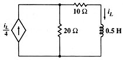

A10 TR analysis: Transitory analysis of circuit with dependent source (#1)
Question. Find the expression for iL(t) if iL(0)=10 Amps.

Solution:
Number nodes. Describe circuit. Simulate it in TR:
sq\tr("jd,0,1,il5/4,0; r20,1,0,20,0; r10,1,2,10,0; l5,2,0,1/2,10"):il510*exp(-50*t)
Answer: The answer obtained is the right one.